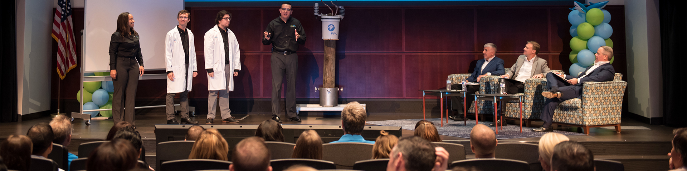
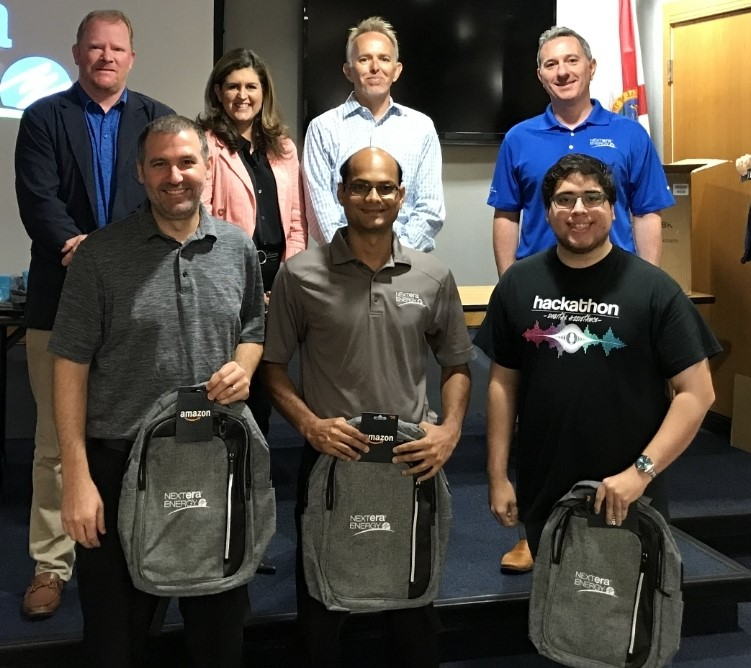

Awards, Victores and Accolades
2019 NextEra Energy Shark Tank Victory
Steven Tolbert and his team compeated in the 2019 NextEra Energy Shark Tank, a corporate wide event where employees submitted and defended proposals for executive funding. This inititive resulted in over 250 thousand dollars in research funding towards building and deploying an automated method of assiging resources based on data-driven events across the grid.
2019 Second Place Nextera Energy Internal Hackathon
Steven Tolbert and his team placed second in the 2019 NextEra Energy hackathon for providing a serverless solution to tagging metadata within video content for machine learning applications. The applcation was developed over the course of 24 hours to provide a serverless method of processing video data and extracting key features for model training with limited user interaction.